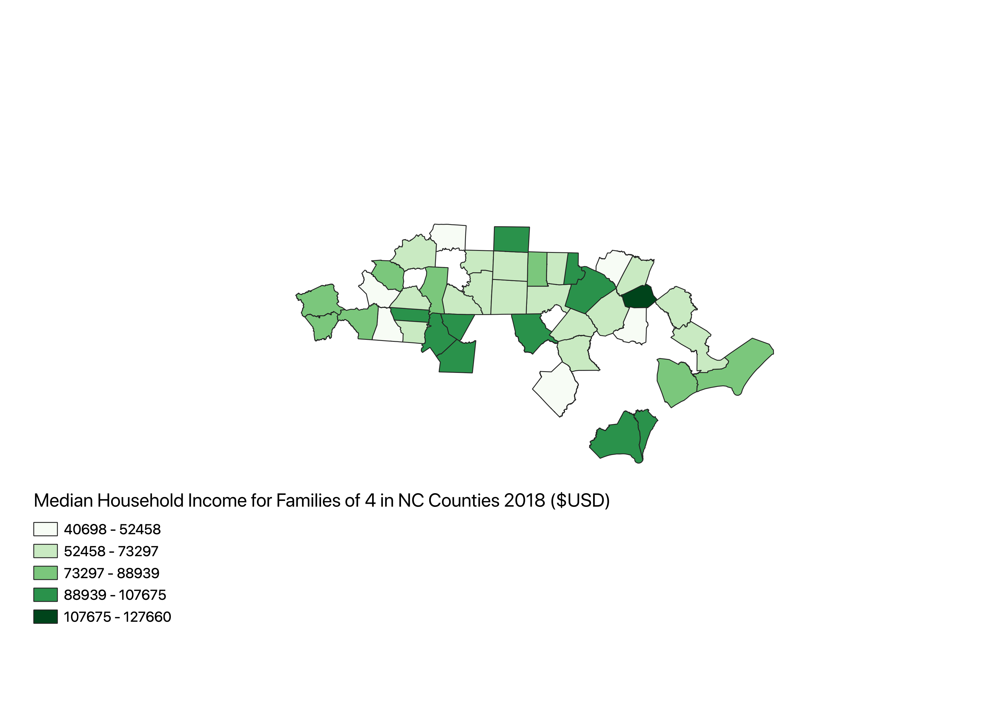

Median Household Incomes for Families of Four in NC Counties.
Sam Rivers

Unfortunately, not all 100 NC counties had data for the median incomes of families of 4. Notice the great disparity between the lowest at roughly 40k per year and the highest at roughly 127k per year. This data was from 2018.
csv
Vector File